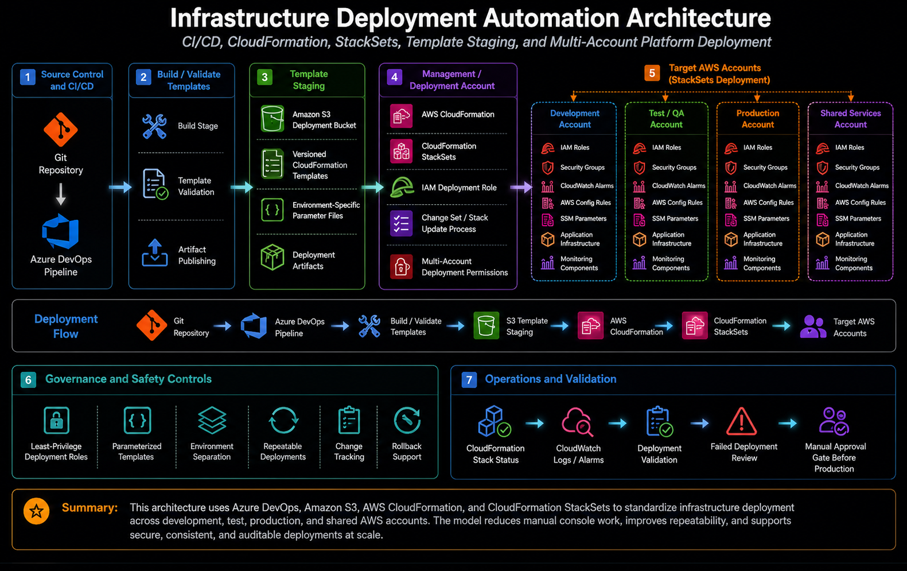

Project Documentation
Infrastructure Deployment Automation
This project documents a repeatable infrastructure deployment model for AWS platform components. The work focused on moving cloud infrastructure changes away from one-off console updates and toward controlled, source-managed, pipeline-driven deployments using Azure DevOps, Amazon S3 template staging, AWS CloudFormation, CloudFormation StackSets, IAM deployment roles, and structured validation.

Overview
Infrastructure deployment automation was designed to make platform changes more consistent across AWS accounts and environments. Instead of relying on manual console work, the deployment model used source control, reusable templates, pipeline stages, artifact publishing, template staging, and CloudFormation deployments. This created a repeatable path for delivering platform resources such as IAM roles, Systems Manager configurations, monitoring components, security controls, account baselines, and shared operational tooling.
The project was not a beginner lab or a single template deployment. It represented the kind of practical platform engineering work required when multiple AWS accounts need to be configured consistently, when changes need traceability, and when infrastructure updates must be tested, reviewed, deployed, and validated with a clear operating model.
Background
As the AWS environment expanded, platform components needed to be deployed across more than one account and, in some cases, across multiple regions. Manual deployment was not sustainable because each console-based change increased the risk of configuration drift, missed steps, inconsistent naming, incomplete validation, and unclear ownership. The more accounts that existed, the more important it became to treat shared platform infrastructure as code.
The work also supported a broader cloud governance model. Account baselines, security controls, user permissions, Systems Manager configuration, and monitoring resources needed a controlled deployment path. CloudFormation and StackSets provided the AWS-native deployment mechanism, while Azure DevOps provided the source-controlled pipeline workflow for build, artifact handling, test deployment, production deployment, and operational release tracking.
Business Problem
The core problem was consistency. Platform resources that are deployed manually can be difficult to reproduce, difficult to audit, and difficult to apply across newly created accounts. Even when the change itself is simple, repeating that change across multiple accounts can introduce errors if every step depends on a person clicking through the console.
The business need was to create a safer and more repeatable operating model. Platform teams needed a way to deploy infrastructure changes through source control, use standardized templates, stage deployment artifacts, apply changes across target accounts, and validate results after deployment. This helped reduce manual configuration work while improving consistency and operational confidence.
Architecture
The architecture followed a pipeline-to-CloudFormation deployment pattern. Infrastructure definitions were stored in source control and organized as reusable CloudFormation templates, StackSet templates, configuration files, and pipeline definitions. Azure DevOps handled the build and deployment stages. Build stages published artifacts, while deployment stages uploaded templates to an S3 deployment bucket and triggered CloudFormation stack or StackSet updates from the management or deployment account.
The S3 staging bucket acted as the controlled handoff point between the CI/CD pipeline and AWS deployment services. Templates and supporting artifacts were uploaded to versioned paths so CloudFormation could reference the exact artifact for a given build or release. CloudFormation stacks handled account-level or management account resources, while StackSets handled repeatable resources that needed to be deployed into multiple accounts or organizational targets.
What I Did
I supported the design and operation of pipeline-driven infrastructure delivery for AWS platform components. This included working with CloudFormation templates, StackSet deployment patterns, Azure DevOps pipeline definitions, S3 artifact staging, deployment parameters, IAM deployment permissions, and validation steps. The work helped turn repeatable platform tasks into controlled deployment workflows rather than manual operational procedures.
I also helped align deployment work with the larger cloud operating model. New or updated platform components needed to be codified, committed to source control, deployed through a pipeline, and validated after release. This approach made the intended configuration easier to understand and made it easier to apply the same pattern to future accounts or future platform components.
Implementation Details
1. Source-controlled infrastructure templates
Infrastructure resources were defined using CloudFormation templates and supporting configuration files. This allowed deployment behavior to be reviewed and updated through source control instead of being hidden inside manual console changes. Template files could define account baselines, IAM resources, Systems Manager components, monitoring resources, security controls, or other reusable platform services.
2. Azure DevOps build and deployment stages
Azure DevOps pipelines provided a structured delivery process. A typical pipeline included a build stage that checked out the repository and published the CloudFormation folder as an artifact. Deployment stages then used AWS tasks or AWS CLI commands to upload templates to a deployment bucket and create or update CloudFormation stacks. This made the release process more consistent and easier to review.
3. S3 template staging
Before CloudFormation deployment, templates were uploaded to an S3 deployment bucket. This staging step allowed CloudFormation and StackSets to reference templates using stable S3 object paths associated with the build number or release version. The staging pattern also helped separate source code from deployment artifacts and made it clearer which version of a template was used for a specific deployment.
4. CloudFormation stack deployment
CloudFormation stacks were used for resources that belonged in the management or deployment account, or for components that acted as the control point for broader account deployment. Template parameters were supplied through the pipeline so deployments could use consistent values for regions, prefixes, deployment buckets, organizational targets, notification topics, and other configuration inputs.
5. CloudFormation StackSet deployment
StackSets were used when platform resources needed to be deployed across member accounts or organizational units. This pattern supported account-wide standardization without requiring individual manual stack creation in each account. StackSets were especially useful for baseline roles, security controls, Systems Manager resources, monitoring configuration, and other repeatable account-level resources.
6. Deployment roles and permissions
The deployment model required careful use of IAM permissions. Pipeline tasks needed permission to upload artifacts, create or update CloudFormation stacks, and perform StackSet operations. Target accounts needed execution roles or service-managed StackSet permissions that allowed approved resources to be deployed safely. This kept deployment access controlled while still allowing platform automation to operate across accounts.
7. Test and production release flow
The deployment process separated test and production stages so platform changes could be reviewed before wider rollout. This gave the team a safer path for validating template behavior, parameter values, deployment permissions, and CloudFormation status before applying changes to production or broader account scopes.
Validation
Validation focused on confirming that the pipeline produced the expected artifacts, the templates were staged correctly in S3, the CloudFormation stack update completed successfully, and the StackSet deployment reached the intended accounts or targets. Failed stack operations needed to be reviewed through CloudFormation events, pipeline logs, and AWS service messages so errors could be corrected before repeating the deployment.
Post-deployment validation also included checking whether the expected resources existed, whether parameters resolved correctly, whether IAM roles and permissions were created as intended, and whether monitoring or notification resources were functioning. For account baseline work, validation meant confirming that the expected control or configuration was actually present in the target account, not just that the pipeline completed.
Operational Workflow
The operational workflow began with identifying a platform need, such as a new baseline control, a Systems Manager configuration, a monitoring update, or a shared account customization. The resource was then codified as CloudFormation, committed to source control, and connected to a pipeline path. The pipeline published the templates, uploaded them to S3, deployed or updated the CloudFormation stack, and applied StackSet resources where needed.
After deployment, the work was validated through pipeline status, CloudFormation events, StackSet operation status, account-level checks, and service-specific confirmation. Any findings from the release were captured as follow-up work, such as template corrections, parameter updates, permission changes, or runbook improvements. This created a repeatable loop for platform improvement instead of isolated one-time deployments.
Outcome
The project improved infrastructure consistency by giving platform changes a repeatable path from source control to deployment. It reduced the need for manual console-based work and made it easier to understand how shared platform resources were intended to be configured. The pipeline pattern also made updates easier to test, review, and apply across multiple accounts.
The most important outcome was operational repeatability. By combining Azure DevOps, S3 artifact staging, CloudFormation, and StackSets, the deployment model created a practical foundation for account baselines, security controls, monitoring resources, Systems Manager configuration, and other shared cloud platform components.
What This Demonstrates
This project demonstrates practical cloud platform engineering beyond writing a single template. It shows how Infrastructure as Code, CI/CD pipelines, deployment roles, artifact staging, CloudFormation stacks, StackSets, and validation workflows come together to support a real multi-account AWS operating model.
It also demonstrates the ability to think operationally about infrastructure delivery: not only how to create resources, but how to version them, deploy them, validate them, troubleshoot failures, and repeat the process safely across accounts.